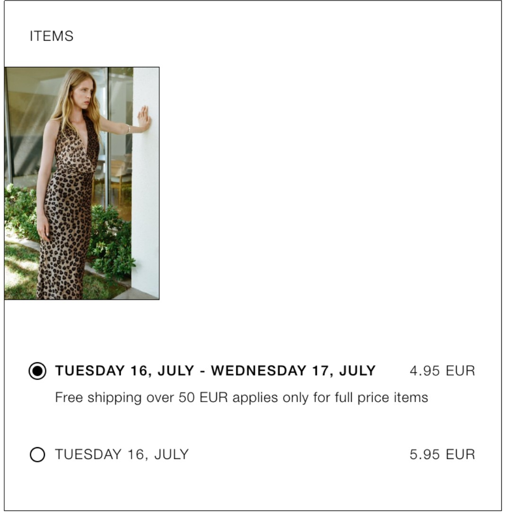
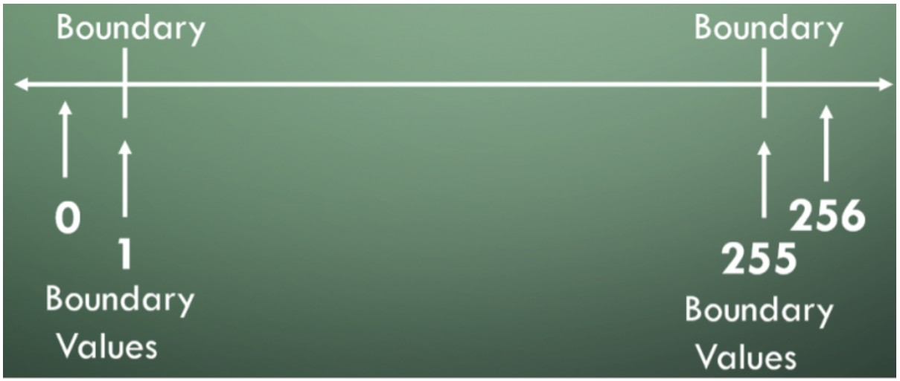
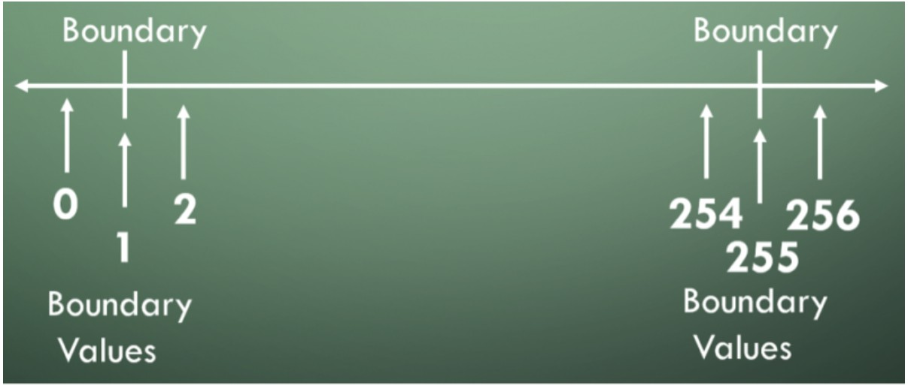
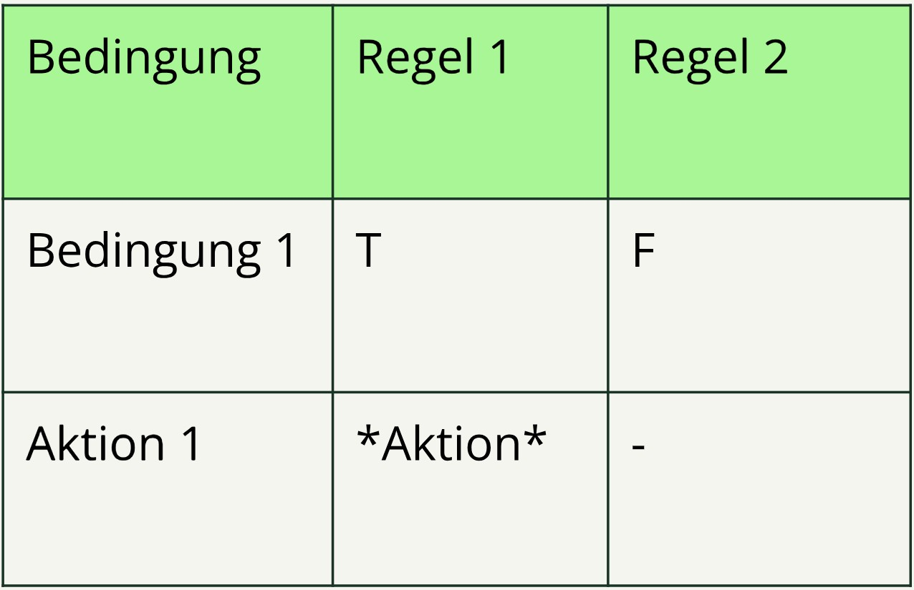
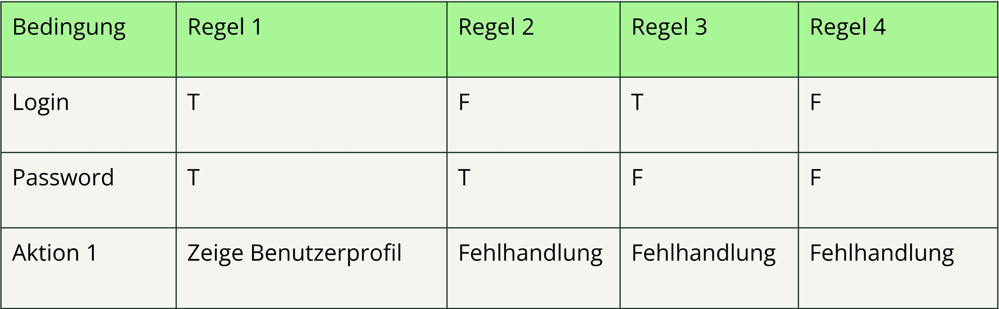
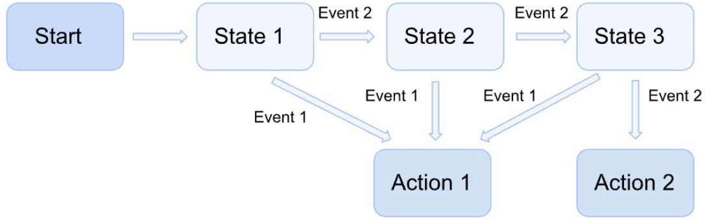

-
Titelfolie F 01
- Lektionstitel und Agenda F 01–02
-
Testanalyse und Testentwurf F 03
- Übersicht der Testverfahren; Testverfahren (Blackbox vs. Whitebox) F 04–05
-
Erfahrungsbasiertes Testen F 06
- Erfahrungsbasierte Testtechniken (Übersicht) F 07
- Intuitive Testfallermittlung und Fault-Attacks F 08–09
- Exploratives Testen; Checklistenbasiertes Testen F 10–11
-
Der Blackbox-Test F 12
- Blackbox-Testentwurfsverfahren (Übersicht) F 13
- Äquivalenzklassenbildung: Theorie und Beispiel (Versandkosten) F 14–15
- Grenzwertanalyse und 2-/3-Werte-Methode F 16–18
- Entscheidungstabellen-Test: Theorie und Beispiel (Login) F 19–20
- Zustandsbasierter Test F 21
-
Whitebox-Tests F 22
- Whitebox-Testverfahren; Anweisungstest und Anweisungsüberdeckung (Theorie und Beispiel) F 23–25
- Zweigtest und Zweigüberdeckung (Theorie und Beispiel) F 26–27
- Der Nutzen von Whitebox-Tests F 28
-
Abnahmekriterien F 29
- Zusammenarbeit; Abnahmekriterien; ATDD F 30–32
-
Hausaufgaben F 33
- Hausaufgabe 1 und 2 F 34–35
-
Zusammenfassung
Hinweis: Reihenfolge in der Original-Agenda war teils anders — hier der korrigierte Ablauf aus den Kursrohdaten.
Erfahrungsbasierte Testtechnik:
- Nutzt das Wissen und die Erfahrung der Tester
- Kann Fehlerzustände aufdecken, die mit Blackbox- und Whitebox-Testtechniken möglicherweise übersehen werden
- Ergänzt die Blackbox- und Whitebox-Testtechniken
- Blackbox-Testverfahren (spezifikationsbasiert): Wir wissen nicht, was sich im Inneren des Systems befindet. Wir überprüfen das Verhalten anhand der Anforderungen.
- Whitebox-Testverfahren (strukturbasiert): Wir kennen die innere Struktur des Systems und leiten unsere Tests aus dieser Struktur ab.
- Intuitive Testfallermittlung
- Exploratives Testen
- Checklistenbasiertes Testen
Ein Testentwurfsverfahren, bei dem die Erfahrung und das Wissen des Testers genutzt wird, um das Auftreten von Fehlhandlungen, Fehlerzuständen und Fehlerwirkungen vorherzusagen.
Dabei wird das Wissen des Testers zu folgenden Punkten verwendet:
- Wie arbeitet das Softwaresystem?
- Welche Fehlhandlungen kommen bei den Entwicklern häufig vor?
- Welche Fehlhandlungen kommen in ähnlichen Systemen vor?
Fault-Attacks sind ein methodischer Ansatz zur Umsetzung der intuitiven Testfallermittlung.
Der Tester erstellt oder beschafft eine Liste möglicher Fehlhandlungen, Fehlerzustände und Fehlerwirkungen und entwirft Tests, die Fehlerzustände aufdecken sollen, die mit diesen Fehlhandlungen in Zusammenhang stehen.
Ziel: Mehr über das Produkt erfahren und ungetestete Bereiche identifizieren.
- Exploratives Testen kann in zeitlich festgelegten Sitzungen (Timeboxes) erfolgen.
- Es ist besonders nützlich, wenn nur wenige oder unzureichende Spezifikationen vorliegen oder ein erheblicher Zeitdruck besteht.
Checklisten können auf Grundlage von Erfahrungen und Wissen darüber, was für den Benutzer wichtig ist, oder einem Verständnis darüber, warum und wie Software versagt, erstellt werden.
Wir erstellen eine Checkliste dessen, was getestet werden muss und was möglicherweise schiefgehen kann.
- Äquivalenzklassenbildung
- Grenzwertanalyse
- Entscheidungstabellentest
- Zustandsbasierter Test
Daten werden in Äquivalenzklassen unterteilt, basierend auf der Annahme, dass alle Elemente einer Klasse gleich behandelt werden.
Daher reicht es aus, jeweils ein Beispiel aus jeder Äquivalenzklasse zu testen.
Beispiel: Kostenloser Versand über 50 Euro
- < 50 € → Versandkosten
- > 50 € → Versandkostenfrei

- Wir müssen die Grenzen unserer Äquivalenzklassen analysieren
- Die Minimal- und Maximalwerte einer Äquivalenzklasse sind ihre Grenzwerte
- Entwickler machen bei diesen Grenzwerten mit höherer Wahrscheinlichkeit Fehler
- Deshalb müssen wir genau diese Werte testen
Für jeden Grenzwert gibt es zwei Überdeckungselemente: den Grenzwert selbst und seinen nächstgelegenen Nachbarn, der zur angrenzenden Äquivalenzpartition gehört.

Quelle: stickyminds.com — Equivalence Partitioning and Boundary Value Analysis
Für jeden Grenzwert gibt es drei Überdeckungselemente: den Grenzwert selbst und beide seiner Nachbarn. Daher sind bei der Drei-Werte-Grenzwertanalyse manche der Überdeckungselemente möglicherweise keine Grenzwerte.

Quelle: siehe Folie 17 (gleicher Artikel-Link).
Entscheidungstabellen werden verwendet, um die Umsetzung von Systemanforderungen zu testen, die festlegen, wie unterschiedliche Kombinationen von Bedingungen zu unterschiedlichen Aktionen führen.
Elemente der Entscheidungstabelle:
- Zeilen: Bedingungen, Aktionen
- Spalten: Entscheidungsregeln

Wir müssen die Login-Seite testen. Gibt der Benutzer korrekte Zugangsdaten (Login und Passwort) ein, wird die Profilseite des Benutzers geöffnet. Sind Login oder Passwort falsch, erscheint eine Fehlermeldung.

Ein Zustandsübergangsdiagramm modelliert das Verhalten eines Systems, indem es dessen mögliche Zustände und gültige Zustandsübergänge darstellt.
„Bitte bezieht euch auf den Online-Kurs, um ein tieferes Verständnis des Themas zu erlangen!“

Fokus auf Code bzw. codebezogene Techniken:
- Anweisungstest
- Zweigtest
Hinweis: Es gibt weitere Whitebox-Testtechniken auf höheren Ebenen, aber diese liegen außerhalb des Geltungsbereichs des ISTQB Foundation Level.
Das Ziel besteht darin, Testfälle so zu entwerfen, dass die Anweisungen im Code ausgeführt werden, bis ein akzeptables Maß an Anweisungsüberdeckung erreicht ist.
Anweisungsüberdeckung = (Anzahl der ausgeführten Anweisungen / Gesamtanzahl der Anweisungen) × 100 %
def calculate_sum(a, b):
if a > b:
result = a + b
else:
result = a - b
return result- Wie viele Anweisungen? Insgesamt 5 (Definition, Bedingung, beide Zuweisungen,
return). - Testfall A = 7, B = 5: Bedingung wahr →
elsewird nicht ausgeführt. - Ausgeführte Anweisungen: 3 von 5 → 60 % Anweisungsüberdeckung.
- Für 100 % mindestens zwei Testfälle (if- und else-Zweig), z. B. A = 4, B = 1 und A = 1, B = 4.
Redaktion: Original war auf mehrere Folien verteilt und enthielt einen Zählfehler — hier eine durchgängige Fassung.
Ein Zweig ist eine Kontrollflussverzweigung zwischen zwei Knoten im Kontrollflussgraphen, der die möglichen Abläufe zeigt, in denen Quellcode-Anweisungen im Testobjekt ausgeführt werden.
Die Zweigüberdeckung ist ein Maß dafür, wie viel Prozent der Zweige (Entscheidungspunkte im Quellcode) während des Testprozesses ausgeführt wurden.
Read A
Read B
IF A + B > 10 THEN
print "A + B is large"
ENDIF
IF A > 5 THEN
print "A large"
ENDIF- Ziel: Alle möglichen Wahr/Falsch-Entscheidungen abdecken.
- Zweige: Zwei unabhängige IF-Blöcke mit je true/false → 4 Zweige.
- Kein einzelner Testfall deckt alle Zweige ab — mindestens zwei Testfälle nötig.
- Testfall 1: (1) 1A → 2C → 3D → E → 4G → 5H
- Testfall 2: (2) 1A → 2B → E → 4F
- Ergebnis: 100 % Zweigüberdeckung.

Grafik / Kontext: tutorialspoint.com — Branch Testing · externe Abbildung kann sich ändern.
Redaktion: Originalinhalt war auf drei Folien verteilt — hier zusammengefasst.
Vorteile:
- Die gesamte Softwareimplementierung wird berücksichtigt
- Wird im statischen Test eingesetzt, z. B. zur Überprüfung von Code, der noch nicht ausführbar ist
- Liefert eine objektive Messung der Überdeckung
Wichtiger Nachteil: Wenn die Software eine oder mehrere Anforderungen nicht implementiert, kann Whitebox-Testing die daraus resultierenden Auslassungsfehler möglicherweise nicht erkennen.
Weiterer Nachteil: Whitebox-Tests erkennen nicht immer datenbezogene Fehler (z. B. Division durch Null), insbesondere bei speziellen Randbedingungen.
Ziel ist es nicht nur, Fehlerzustände zu entdecken, sondern sie durch Zusammenarbeit und Kommunikation zu vermeiden.
Abnahmekriterien werden verwendet, um:
- Den Umfang der User Story zu definieren
- Einen Konsens zwischen den Stakeholdern zu erzielen
- Sowohl positive als auch negative Szenarien zu beschreiben
- Als Grundlage für den Abnahmetest der User Story zu dienen
- Eine präzise Planung und Aufwandschätzung zu ermöglichen
ATDD ist ein testgetriebener Ansatz. Testfälle werden vor der Implementierung der User Story erstellt.
Schritte der ATDD:
- Analyse der User Story und der Abnahmekriterien
- Erstellung von Testfällen (normalerweise zuerst positive, dann negative)
- Abdeckung nicht-funktionaler Qualitätsmerkmale
Die Testfälle müssen alle Merkmale der User Story abdecken, dürfen aber nicht über den Umfang der Story hinausgehen.
Thema: 100 % Zwei-Werte-Grenzwertanalyse — Versandkosten
Ausführung und Abgabe im QA-Repo unter 03_Hausaufgaben/ (konkrete Aufgabenstellung dort bzw. im Kurs).
Thema: Anwendung des ATDD-Ansatzes
Szenario: Hotelbesitzer reserviert alle Zimmer einer Etage, bevor er zur nächsten übergeht, um die Effizienz des Reinigungspersonals zu maximieren.
Ausführung und Abgabe im QA-Repo unter 03_Hausaufgaben/.